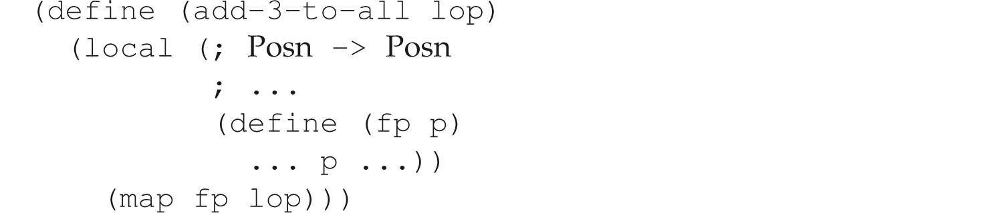
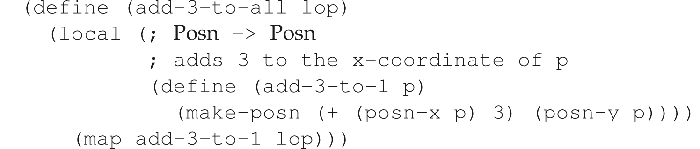
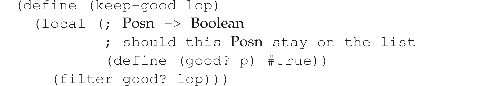
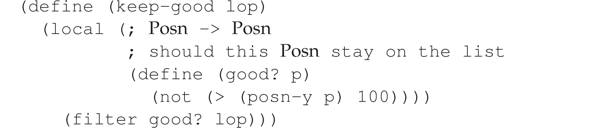
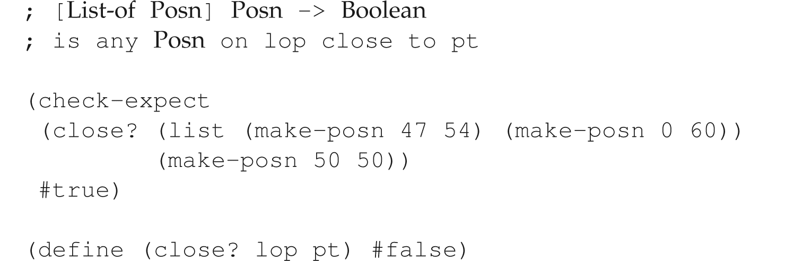
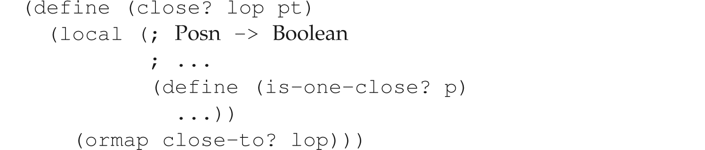
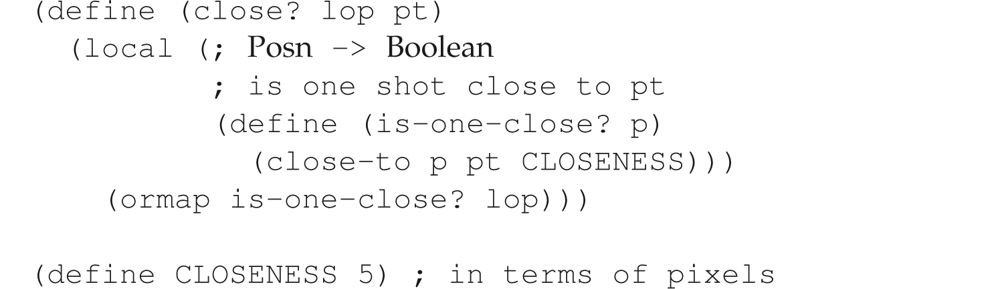

16.5 Using Abstractions, by Example
Now that you understand local, you can easily use the abstractions from figures 95 and 96. Let’s look at examples, starting with this one:
Sample Problem Design add-3-to-all. The function consumes a list of Posns and adds 3 to the x-coordinates of each.
If we follow the design recipe and take the problem statement as a purpose statement, we can quickly step through the first three steps:
; [List-of Posn] -> [List-of Posn]
; adds 3 to each x-coordinate on the given list
(check-expect
(add-3-to-all
(list (make-posn 3 1) (make-posn 0 0)))
(list (make-posn 6 1) (make-posn 3 0)))
(define (add-3-to-all lop) '())
While you can run the program, doing so signals a failure in the one test case because the function returns the default value '().
At this point, we stop and ask what kind of function we are dealing with. Clearly, add-3-to-all is a list-processing function. The question is whether it is like any of the functions in figures 95 and 96. The signature tells us that add-3-to-all is a list-processing function that consumes and produces a list. In the two figures, we have several functions with similar signatures: map, filter, and sort.
The purpose statement and example also tell you that add-3-to-all deals with each Posn separately and assembles the results into a single list. Some reflection says that also confirms that the resulting list contains as many items as the given list. All this thinking points to one function—map—because the point of filter is to drop items from the list and sort has an extremely specific purpose.
Here is map’s signature again:
; [X Y] [X -> Y] [List-of X] -> [List-of Y]
It tells us that map consumes a function from X to Y and a list of Xs. Given that add-3-to-all consumes a list of Posns, we know that X stands for Posn. Similarly, add-3-to-all is to produce a list of Posns, and this means we replace Y with Posn.
From the analysis of the signature, we conclude that map can do the job of add-3-to-all when given the right function from Posns to Posns. With local, we can express this idea as a template for add-3-to-all:

Doing so reduces the problem to defining a function on Posns.
Given the example for add-3-to-all and the abstract example for map, you can actually imagine how the evaluation proceeds:
(add-3-to-all (list (make-posn 3 1) (make-posn 0 0)))
==
(map fp (list (make-posn 3 1) (make-posn 0 0)))
==
(list (fp (make-posn 3 1)) (fp (make-posn 0 0)))
And that shows how fp is applied to every single Posn on the given list, meaning it is its job to add 3 to the x-coordinate.
From here, it is straightforward to wrap up the definition:

We chose add-3-to-1 as the name for the local function because the name tells you what it computes. It adds 3 to the x-coordinate of one Posn.
You may now think that using abstractions is hard. Keep in mind, though, that this first example spells out every single detail and that it does so because we wish to teach you how to pick the proper abstraction. Let’s take a look at a second example a bit more quickly:
Sample Problem Design a function that eliminates all Posns with y-coordinates larger than 100 from some given list.
The first two steps of the design recipe yield this:
; [List-of Posn] -> [List-of Posn]
; eliminates Posns whose y-coordinate is > 100
(check-expect
(keep-good (list (make-posn 0 110) (make-posn 0 60)))
(list (make-posn 0 60)))
(define (keep-good lop) '())
By now you may have guessed that this function is like filter, whose purpose is to separate the “good” from the “bad.”
With local thrown in, the next step is also straightforward:

The local function definition introduces the helper function needed for filter, and the body of the local expression applies filter to this local function and the given list. The local function is called good? because filter retains all those items of lop for which good? produces #true.
Before you read on, analyze the signature of filter and keep-good and determine why the helper function consumes individual Posns and produces Booleans.
Putting all of our ideas together yields this definition:

Explain the definition of good? and simplify it.
Before we spell out a design recipe, let’s deal with one more example:
Sample Problem Design a function that determines whether any of a list of Posns is close to some given position pt where “close” means a distance of at most 5 pixels.
This problem clearly consists of two distinct parts: one concerns processing the list and the other one calls for a function that determines whether the distance between a point and pt is “close.” Since this second part is unrelated to the reuse of abstractions for list traversals, we assume the existence of an appropriate function:
; Posn Posn Number -> Boolean
; is the distance between p and q less than d
(define (close-to p q d) …)
You should complete this definition on your own.
As required by the problem statement, the function consumes two arguments: the list of Posns and the “given” point pt. It produces a Boolean:

The signature differentiates this example from the preceding ones.
The Boolean range also gives away a clue with respect to figures 95 and 96. Only two functions in this list produce Boolean values—andmap and ormap—and they must be primary candidates for defining close?’s body. While the explanation of andmap says that some property must hold for every item on the given list, the purpose statement for ormap tells us that it looks for only one such item. Given that close? just checks whether one of the Posns is close to pt, we should try ormap first.
Let’s apply our standard “trick” of adding a local whose body uses the chosen abstraction on some locally defined function and the given list:

Following the description of ormap, the local function consumes one item of the list at a time. This accounts for the Posn part of its signature. Also, the local function is expected to produce #true or #false, and ormap checks these results until it finds #true.
Here is a comparison of the signature of ormap and close?, starting with the former:
; [X] [X -> Boolean] [List-of X] -> Boolean
In our case, the list argument is a list of Posns. Hence X stands for Posn, which explains what is-one-close? consumes. Furthermore, it determines that the result of the local function must be Boolean so that it can work as the first argument to ormap.
The rest of the work requires just a bit more thinking. While is-one-close? consumes one argument—a Posn—the close-to function consumes three: two Posns and a “tolerance” value. While the argument of is-one-close? is one of the two Posns, it is also obvious that the other one is pt, the argument of close? itself. Naturally the “tolerance” argument is 5, as stated in the problem:

Note two properties of this definition. First, we stick to the rule that constants deserve definitions. Second, the reference to pt in is-one-close? signals that this Posn stays the same for the entire traversal of lop.